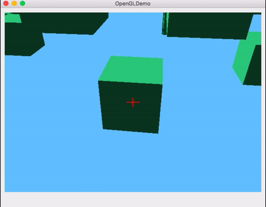
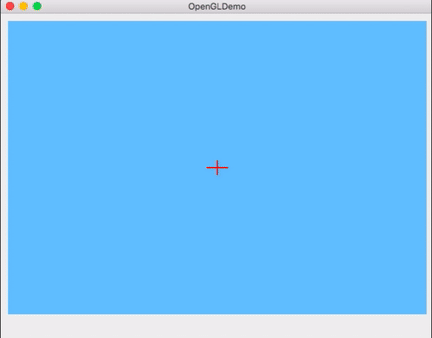
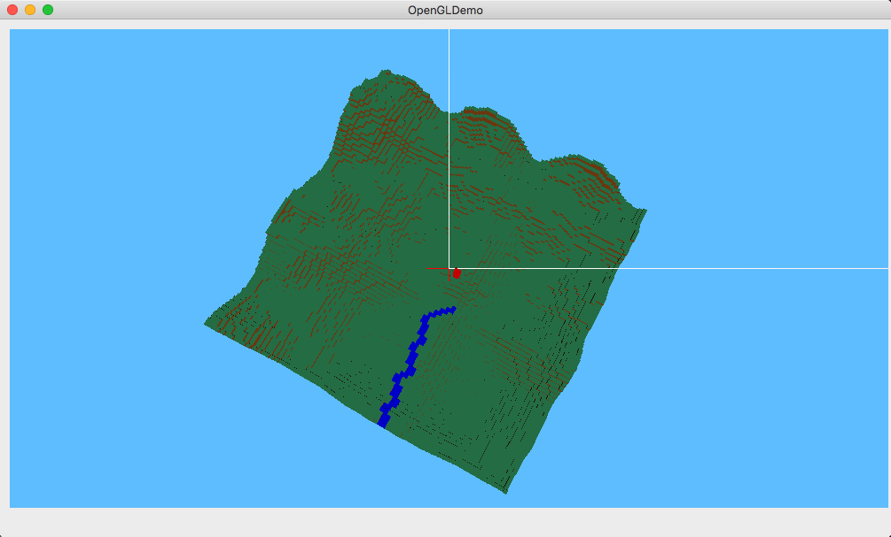
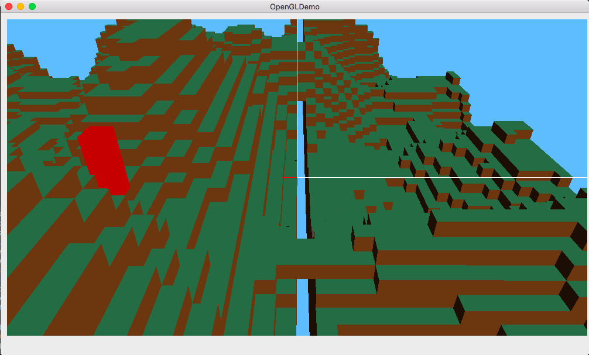
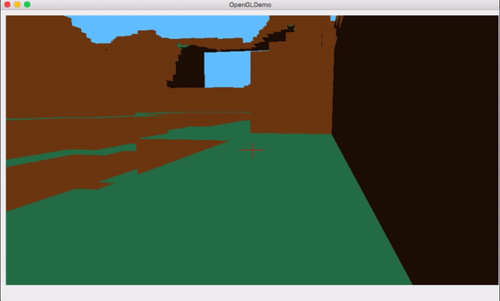

Mini Minecraft
Milestone 1: Terrain Collisions and Physics 11/21/16
Camera and Player Control
One of the issues that I found was that it was incredibly difficult to control the camera when the cursor movse off the window. To combat this, I locked the cursor to the center of the screen. To get the center, I divided the camera width and height by 2 and manually set the cursor after orienting the view. Then this caused the cursor to spaz at the center and was really distracting. So I added a built in QT function setOverrideCursor(QCursor(Qt::BlankCursor)) to hide it.
To orient the camera, I implemented the Polar Coordinates Pivot Model. I achieved this by keeping a global rotation variable and subtracted it from the current point by component. The difference represents the angles Φ (y rotation) and θ (x rotation).
The standard W,A,S,D keys are used to move the player as well as Q,E to move up and down.
Left Click - Destroy Block
Right Click - Add Block
Block interaction is discussed in more detail below.
Block Interaction
Like in the original Minecraft, our version allows the user to destroy and create blocks. To achieve block deletion, I implemented basic Raymarching.
Utilizing the following equation for finding a point on a ray:
point = eye + (t * direction)
where the eye is the current position and the direction is fixed to the center of the screen where the crosshair lies. I iterate through each block in the list and compare the point on the ray to it. Each iteration increases the t value by .1 to attempt to move closer a block.
Future Improvements
My current implementation isn't as efficient as I would like. It currently runs at O(n2). When textures are added and the world expands, iterating through the blocklist causes the game to slow immensely as I saw in Milestone 2.
Another feature I want to add is outlining which block the player wants to destroy. I implemented a similar feature in the half-edge mesh project where the user can select various edges of a mesh.
Destroying Blocks
Due to time constraints, I implemented a fairly simple way to add blocks to the world. The specifications were to place the block to the nearest available position. Blocks are added to the blocklist based on the current position and a slight offset.
Future Improvements
I would like to have a more robust way of checking where to add blocks. Right now it doesn't take into account if there already exists a block in the spot the player wants to put a block.
Creating Blocks
Terrain Collisions and Physics
Gravity was a simple implementation. I just multiplied the player's velocity of the y component by -9.8.
However collisions were a difficult task.
In the gif, the player (the blue rectangle) walks along the staggered terrain and then falls when it doesn't detect any ground. It would also fall slightly if there was a discrepency in block heights.
Using the player position, I used an offset of 2 in the y direction. This gets me the maximum y value and I can use box-box intersection.
I iterated through the blocklist and compared the player position to the blocks using box-box intersection testing. Unfortunately this didn't work as nicely when we merged together our code and I had an actual terrain to walk on. However, the player does detect blocks that it hits whether you go forward, backward, left, or right. When it does, I bounce the player back to before it collides with the block.
Gravity

Milestone 2: L-System River Generation and Sandbox Camera Mode 12/5/16
Milestone 1 Updates
- Moving the player with a slower velocity rate
- Added updatePlayer(): use flags when user presses W,A,S,D and update the player based on new velocity
- Attempted to fix collisions based on the new Perlin Terrain... :(
River Generation
I struggled with this part this week. It wasn't trying to generate an L-System that was hard, but it was trying to work with how the terrain is generated. My idea was to trace out the path of the river (which is what you see in blue in the picture) before carving it out of the terrain.
For the L-System I used a basic one that was presented in class:
Rule: X -> S[-FX]+FX
F: draw a branch
-/+: turn (-/+) 45 degrees
S: return to this point
After seeing how slow it was to parse the axiom and then change the blocks, I now understand that L-System parsing is just an abstract concept. 😅
The idea was to delete all the blocks that are within the blue and then add water blocks to generate a river.
Sad River

This opened an unfortunate can of worms. When I tried to delete blocks, the block would be removed from the blocklist BUT it would still be rendered on screen. Oddly enough when I tried to delete an entire row of blocks, it would work 90% of the way...but would leave some there. Obviously this caused problems for when players left-click and try to delete blocks or add blocks.
Sandbox Mode
I had implemented a similar mode in Milestone 1. I had created a player block, which you can see in the gravity gif, that you can control from third person. One of my friends suggested to do this to help debug collisions, which was a great tip.
So to implement the required feature I just made it so the player can toggle between modes. When the player presses F, the camera toggles between first person and a flyby camera. A flag is also used to draw and undraw the player block. The player block is only drawn when the flyby camera is toggled on. Essentially, the camera is just to look around the scene and does not actually move the player so I can further debug different developments.
In the gif, the player looks around then presses F. The player moves the camera out and looks at the red block that represents the player.
Deletion Fail
Sandbox Camera
Future Improvements
- Fix rendering of blocklist so I can delete/add blocks
- Make a more detailed grammar for the L-System for a nicer looking river
Milestone 3: Special Features 12/14/16
Milestone 2 Updates
- isGrounded(): Fixed groundedness for the player. I realized that I was using the wrong offset in previous milestones to determine positioning of the player. I also drew the player wrong. The player should be 2 regular sized blocks; in the previous milestone it was slightly larger than 2 blocks.
Steering NPC
I was inspired by the 562 Behaviors assignment to implement steering for different NPC's (cows and birds). I found a very useful tutorial series that helped for 562 as well as this project. I, at least planned to, implement Seek, Arrival, Wander, among others.
I had done a crowd simulator during my undergrad, SteerLite. And for that, I had directed the agents by giving them different goal points that would help them to their final destination. This helped reduce collisions greatly. Because I was pressed for time, I implemented a similar system for the cows. The two cows moving are given various goals along the terrain. The static cow is meant to follow the player when they move.
The birds however have a random wandering scheme. When they get to their goal, a new goal is computed within the range of the current world (player doesn't move to expand the world).
Wandering Cows

Sounds
Dance Thriller Spectacular
add stuff here
Future Improvements
- checkCollisions(): I wanted to spend more time on the new special features so I didn't really fix the collisions. I assume that it's the same problem as I had with groundedness so I'll probably come back to this even after the semester.
- NPC's: Because collisions were not working 100%, my current implementation is goal directed and doesn't take into account of collisions. I would like to make this more randomized so the NPC's can wander with autogenerated goals. I would also like to have each NPC be aware of its surrounding agents. So that they can avoid each other. I do a naive check for birds where if they have the same goal, a new goal is set. This does not avoid collisions all together but it does help it slightly.